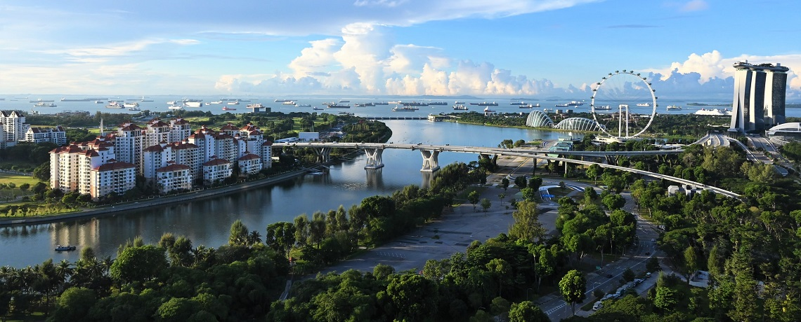

|
Objetivo 9:
Indústria, Inovação e Infraestrutura |
|
|
Investimentos em infraestrutura e inovação são indutores cruciais do crescimento econômico
e do desenvolvimento. Por isso, não dá para deixá-los de lado quando pensamos nas metas globais para
promover o progresso, de forma sustentável, em todo o mundo. É exatamente sobre este tema que trata o nono
dos Objetivos de Desenvolvimento Sustentável (ODS) da Organização das Nações Unidas (ONU),
a serem cumpridos até 2030 – saiba mais sobre eles por aqui. “Indústria, inovação e infraestrutura” são os
três “is” que compõem este objetivo: Construir infraestruturas resilientes, promover a industrialização
inclusiva e sustentável e fomentar a inovação. |
|

|